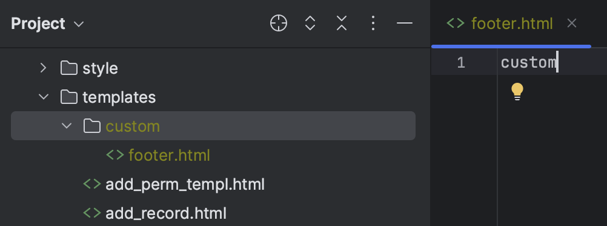
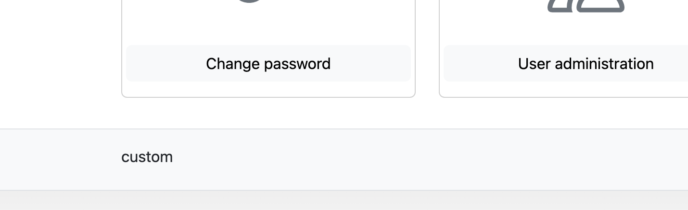

Note: This documentation is still in progress, not reviewed properly, and might contain some errors or outdated images. It's intended for the upcoming 4.0.0 release, so configuration settings might be different from previous versions.
Layout Customization
Poweradmin allows you to customize various layout aspects to better fit your workflow. These settings are configured in the settings.php file under the interface section.
Customizing Header and Footer
Poweradmin supports custom header and footer templates through the theme system.
Configuration
First, configure your theme settings in settings.php:
return [
'interface' => [
'theme' => 'custom', // Set to 'custom' to use your custom templates
'style' => 'light', // Options: 'light', 'dark'
'theme_base_path' => 'templates', // Base path for theme templates
],
];
Creating Custom Templates
- Create a directory structure for your custom theme:
templates/
└── custom/
├── header.html
├── footer.html
└── other template files...
- Create the following files:
Custom Header (templates/custom/header.html)
<!-- Your custom header content goes here -->
<img src="assets/your-logo.png" height="32">
<span class="fs-4">Your Custom Title</span>
Custom Footer (templates/custom/footer.html)
<!-- Your custom footer content goes here -->
<p>© 2025 Your Organization - Powered by <strong>Poweradmin</strong></p>
Here are examples of custom templates in action:
Custom Header File Structure

Custom Footer Example

Template Variables
The following template variables are available in your custom templates:
Header Template Variables
{{ iface_title }}- Title from configuration settings{{ iface_style }}- Current theme style (light or dark){{ file_version }}- File version timestamp for cache busting
Footer Template Variables
{{ version }}- Poweradmin version{{ iface_style }}- Current theme style{{ file_version }}- File version timestamp for cache busting
Examples
Corporate Branding Header
<img src="assets/corporate-logo.png" height="40">
<span class="fs-4 ms-2">Corporate DNS Management Portal</span>
Extended Footer with Links
<div class="d-flex flex-column">
<p class="mb-1">© 2025 Your Organization - DNS Management</p>
<p class="mb-0 small">
<a href="https://support.example.com" class="text-decoration-none">Support</a> |
<a href="https://docs.example.com" class="text-decoration-none">Documentation</a> |
<a href="mailto:dns-admin@example.com" class="text-decoration-none">Contact</a>
</p>
</div>
UI Element Positioning
Form Element Positioning
Control the positioning of key UI elements:
- position_record_form_top: Place the "Add record" form at the top of the page. Default:
false - position_save_button_top: Place the "Save changes" button at the top of the page. Default:
false
return [
'interface' => [
'position_record_form_top' => true,
'position_save_button_top' => true,
],
];
Content Display Options
Configure which information is displayed in the user interface:
- show_record_id: Show record ID column in edit mode. Default:
true - show_zone_comments: Show zone comments. Default:
true - show_record_comments: Show record comments. Default:
false - display_serial_in_zone_list: Show serial number in zone list. Default:
false - display_template_in_zone_list: Show template information in zone list. Default:
false
return [
'interface' => [
'show_record_id' => true,
'show_zone_comments' => true,
'show_record_comments' => true,
'display_serial_in_zone_list' => true,
],
];
Display Mode
Configure how the main index page displays information:
- index_display: Choose between card view or list view. Options:
cards,list. Default:cards
return [
'interface' => [
'index_display' => 'list',
],
];
Pagination
Control how many items appear per page:
- rows_per_page: Number of items displayed per page. Default:
10
return [
'interface' => [
'rows_per_page' => 20,
],
];
Zone Editing Features
Enable or disable special editing features:
- add_reverse_record: Add the checkbox option to create PTR records from A/AAAA record view. Default:
true - add_domain_record: Add the checkbox option to create A/AAAA records from PTR record view. Default:
true
return [
'interface' => [
'add_reverse_record' => true,
'add_domain_record' => true,
],
];
Notes
- The custom templates use a simple templating system
- Changes may be overwritten during updates - keep backups of your custom files
- You can include custom JavaScript in your header/footer templates if needed